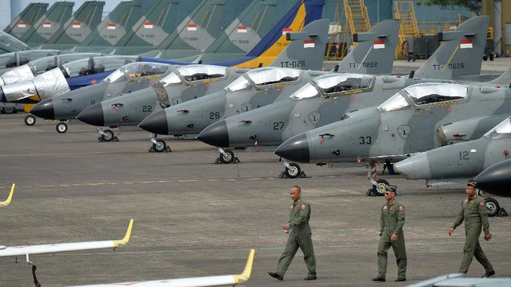

Sindiran Berjemaah Netizen usai Akun Kemhan Ungkap Jumlah Jet Tempur
Jakarta, CNN Indonesia -- Warganet ramai-ramai menyindir Menteri Pertahanan Prabowo Subianto usai akun Twitter atau X milik Kementerian Pertahanan mengunggah angka total pesawat tempur RI. Sebelumnya, Prabowo, dalam debat calon presiden, tak bisa menjawab pertanyaan lawan-lawannya soal alat utama sistem senjata (alutsista) dengan dalih rahasia negara. "TNI AU saat ini memiliki 466 unit armada pesawat, dan di awal tahun 2026 secara bertahap akan diperkuat 42 jet tempur Rafale Dassault Aviation, bagian dari upaya modernisasi Menteri Pertahanan Prabowo Subianto," kicau akun @Kemhan_RI, Rabu (17/1).Akun ini juga mengungkap Kepala Staf Angkatan Udara (KSAU) Marsekal TNI Fadjar Prasetyo menepis isu "bahwa kesiapan pesawat tempur Indonesia rendah. "Ditegaskannya, walaupun mengalami kendala dalam pemenuhan suku cadang pesawat Sukhoi imbas perang Rusia dan Ukraina, TNI AU mampu mengatasinya, dan memperlihatkan kepada rakyat Indonesia," kicau akun Kemhan. "bahwa TNI AU selalu siap mempertahankan kedaulatan udara Nusantara." Sebelumnya, Prabowo ogah mengungkap data alutsista saat debat capres dengan capres Anies Baswedan dan capres Ganjar Pranowo dengan dalih rahasia negara dalam debat ketiga Pilpres 2024 di Istora Senayan, Jakarta, Minggu (7/1) malam.
"Jadi saya mengundang, kita bicara, terbuka, Silahkan," Prabowo malah mengajak dua kompetitornya untuk bicara alutsista secara personal.
...